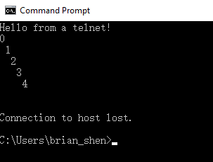

GEvent && Zeromq¶
| date: | 2017-12-18 |
|---|---|
| tags: | Python |
| category: | Python |
| slug: | GEvent_and_Zeromq |
| author: | Brian Shen |
| summary: | GEvent && Zeromq |
GEvent¶
gevent is a concurrency library based around libev. It provides a clean API for a variety of concurrency and network related tasks.
Reference¶
- https://sdiehl.github.io/gevent-tutorial/ (An excellent tutorial website)
- https://github.com/gevent/gevent
- http://www.gevent.org/intro.html#installation
Code Sample¶
import time
import gevent
from gevent import socket
from gevent import queue
"""
Sample 1: Simple, usage for execute them in order
"""
urls = ['www.baidu.com', 'www.python.org']
jobs = [gevent.spawn(socket.gethostbyname, url) for url in urls]
gevent.joinall(jobs, timeout=2)
print [job.value for job in jobs]
"""
Sample 2: Simple, usage for execute them in order
But it will spare cpu to other if there exists ant waiting
(Remember to use gevent.sleep instead of time.sleep )
"""
def waitandprint(pstr="default"):
print "init" + pstr
gevent.sleep(1) # Important
print(pstr)
jobs_loop = [ gevent.spawn(waitandprint,i) for i in ["1","2","3"] ]
print jobs_loop
gevent.joinall(jobs_loop)
"""
Sample 3: Simple, usage for consumer and assigner
But it will spare cpu to other if there exists ant waiting
(Remember to use gevent.sleep instead of time.sleep )
"""
def wait_forever_and_print(q):
try:
while True:
gevent.sleep(2)
item = q.get(timeout=1)
if item:
print "Incomming: [%s]" % item
except queue.Empty:
print "Quitting"
def generate_forever_and_print(q):
beginnum = 0
while True:
gevent.sleep(2)
try:
if beginnum < 5:
beginnum = beginnum + 1
print "outting=>[%s]" % beginnum
q.put("%s" % beginnum)
else:
break
except Exception as e:
print e
q.task_done()
task_queue = queue.JoinableQueue()
for i in range(2):
task_queue.put(i)
jobs_loop = [ gevent.spawn(wait_forever_and_print, task_queue),
gevent.spawn(generate_forever_and_print, task_queue) ]
gevent.joinall(jobs_loop)
print "Done"
Zeromq¶
Much simple!
Reference¶
- https://sdiehl.github.io/gevent-tutorial/ (An excellent tutorial website)
- https://github.com/zeromq/pyzmq
Code Sample¶
import gevent
import zmq.green as zmq
from gevent.server import StreamServer
context = zmq.Context()
def server():
server_socket = context.socket(zmq.REQ)
server_socket.bind("tcp://127.0.0.1:5000")
for request in range (1, 10):
server_socket.send("Hello")
print('Switched to Server for %s' % request)
server_socket.recv()
def client():
client_socket = context.socket(zmq.REP)
client_socket.connect("tcp://127.0.0.1:5000")
for request in range(1,10):
client_socket.recv()
print('Switched to Client for %s' % request)
# Implicit context switch occurs here
client_socket.send("World")
publisher = gevent.spawn(server)
client = gevent.spawn(client)
gevent.joinall([publisher, client])
# On Unix: Access with ``$ nc 127.0.0.1 5001``
# On Window: Access with ``$ telnet 127.0.0.1 5001``
def handle(socket, address):
socket.send("Hello from a telnet!\n")
for i in range(5):
socket.send(str(i) + '\n')
socket.close()
server = StreamServer(('127.0.0.1', 5001), handle)
server.serve_forever()
